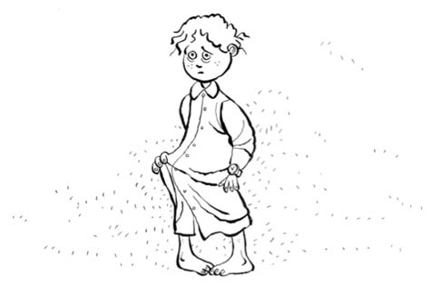

SÜNNET ARTIK FARZ
Sünnet artık farz oldu. Civanımın İzmir’deki şanlı direnişinin üzerinden iki yıl geçmiş, daha kanı kurumamışken babamın da aklına düştü sünnet işi.
Emirbuhari İlkokulu’nda okuyorum. 4. sınıfta bir ben varım kaçak durumunda olan. Yaz ayları başlamadan bu işin kokusu çıkardı o zamanlar. Deprem, sel ya da ailevi büyük bir felaket dışında buna engel olacak başka durum da olmaz. Babam civardan kiminle konuşsa, söz, dönüp dolaşıp benim sünnet işine gelip dayanmaya başlayınca ben de iyice inanır oldum.
Bir aile ziyareti sırasında konuyu Şerif’ime de açtım. Hâl böyle böyle, vaktiyle tuvaletin penceresinden firar edebilseydin bu işler buralara kadar gelmezdi! “Kaçabilseydin” diye özellikle söylemiyorum ki birilerinin kulağına gider de yanlış anlama olabilir diye. Firarı daha dün yaşamış gibi dalıp gitti gözleri “Unutmamışlar mı mevzuyu?” dedi. “Valla Şerif’im, unutsalar iyiydi de Erdoğan Amcam da babam kadar dillendiriyor” dedim. “Deme ya!” manasında kaşları çatıldı. Gerçekten de Erdoğan Amcam millî manevi ne kadar âdet, kutlama ve bayram varsa hepsini aynı değerde ifa eder ve ettirirdi. Şerif’in sünnet işinin öncesinde, “Üzülme, kendiliğinden düşer, kesmelerine gerek kalmaz bakarsın” demiştim, birkaç gün o umutla gezmişti. Civanım bana sormadan, “Yerinde duruyor” diye ima ettim. “Genelde düşmez” gibisinden derin bir mana gelip gözlerine yerleşirken mangal gibi yüreğiyle de bir nefes koydu ki, duyanın saçları savrulur da, bana faydası yok tabii.
Birkaç gün geçti, babamla çarşıya çıktık. Bursa Ulu Camii karşısında merkez postanesi vardır. Girdik postaneye. O zamanlar telefon her mahallede bir ya da iki tane bulunurdu. Okullar kapanalı üç beş gün ya oldu ya olmadı. Sevinç henüz taze. Belli ki mutluluktan istifade durumları söz konusu. Babam ceplerini karıştırdı, buruşuk bir kâğıt çıkardı. “Mehmet Kök” diye mırıldandı. “Kim bu Mehmet Kök?” dedim. “Senin sünnetçi” dedi. Adını muhtemelen Erdoğan ya da Turan Amcamdan öğrenmiştir. “Adı bu mu sünnetçinin?” dedim. “Hı hı” manasında başını salladı babam.
Telefonda babam aklındaki tarihi söyledi. Malum, bir nevi ailesel, toplumsal cinnet hâlidir sünnet. Katılım ve eğlenmenin mecburi olduğu konulardandır. Urfa’dan Almanya’ya kadar haberler gidecek. Herkese uyan bir zaman olmalı ki kimse gönül koymasın.
Sünnetçinin adını kime söylesem, ya ben oldum diyor ya da ben daha düşünmüyorum. Serde erkeklik var, seneye kalsın da denmeyecek yaşa gelmişim. Bir akşam Remzi Amcamlar geldi. Amcam bozuk çakmak sattığından, en fazla zarara uğrayanlardan biri de oydu. Babamın en yakın arkadaşlarından. “Kirve ben olacağım” dedi. Remzi Amcamı çok severdim. Küçükken bana ne zaman istesem erikle kiraz alırdı. Kirve olacağını duyunca çok sevindim. Bir de yerime sünnet olacak birini bulduk mu tamamdır manasına ağzını yokladım. Kirvelikten beni kast ettiği yetmediği gibi vazgeçmeyeceği de belli oldu. Anadolu’da kirvelik konusunu anlattı. Bizans tarafına düşsek belli ki bu işler başa gelmeyecekmiş. “Ahmet’im koçum, he heyyt” diye nara atarak tek kolla da boynumu, sırtımı şöyle bir sıvazlayınca anladım ki konu millî mesele. Sırtımı en son böyle sıvazladıklarında Bursa’da okula yazdırmışlardı.
En küçük amcam, Urfa’dan bozuk çakmakları getirip İzmir’de satan, dolap kapağından pinpon masası yapan, hani ben okumayı sökeyim diye kırmızı çakısını ödül diye ortaya koyan, adı Vehbi olan. En son ona da böyle el ense çekip he heyt dediklerinde askere göndermişlerdi, yıl 1976. Kıbrıs Savaşı biteli iki yıl olmuş ama destansı hikâyeleri hâlâ anlatılıyor. Yeni bir savaş çıksa benim iş kalır mı yoksa sünneti aradan çıkarıp mı savaşa giderdi millet bilemiyorum.
Konu, mahallede de dilleniyor. Çocuklar o seneki celp döneminde kimlerin kesileceğini kulaktan kulağa yayarlardı. “Ağlarsın sen kesin!” dedi birisi. “Şeklini beğenmezsem ağlarım” diyecek hâlim yok. Konu artık dönülmez noktaya gelmiş. “Ağlarsam da duygulandığımdan ağlarım” demek vardı da o an aklıma gelmedi.
Günler yaklaştıkça bizim evdeki hareket de artmaya başladı. Uzaktan yakından ne kadar akraba varsa ağzı kulaklarında gelmeye başladılar. Daha içeri girer girmez “Allah askerliğini, evliliğini de göstersin” diye başlıyorlardı konuşmaya. Bir Allah’ın akrabası da demedi ki, “Yav, bir yıl daha bekleyelim, belki kendi bildiği bir sünnetçi vardır!” Herkes, madem geldik kesilecek elbet noktasında. Allah var, hangisinin evine gittiysem yakıp yıkmadığım eşyaları kalmamıştı. O günleri hatırlayanlar ayrı bir keyifle konuya giriyorlardı.
Bir gün Erdoğan Amcam geldi. Şerif’im civanım Demirci’de. Okullar kapalı, belli ki son anda bir baskınla bu işten beni sıyırmanın yollarını aramaya gitmiş. “Ali’m” dedi, “sünnette limonatayı ben yapacağım!” Erdoğan Amcamı ilk kitaptan beri bilen bilir. Şimdiki projesi, limonata. Babam da “Hay hay Erdoğan’ım” dedi. “Yav, nasıl, niye, ne gerek var, biliyor musun yapmayı?” falan, tek laf yok. “Hay hay”, “tamam”, konu bitti.
Sünnetçi, limonatacı işleri hallolunca, geriye o gün sünnet öncesi şeref turunu kim yaptıracak konusu kaldı. At da olur araba da. Almanya’dan Yusuf Amcam arabasıyla gelmişti. Bir de ev sahibimiz Ahmet Amca vardı. İkisinin de arabalarıyla tur işini üstlenmeleriyle bu konu da halloldu. Son bir konu kaldı; kıyafet.
Annem ve Remzi Amcamın hanımı Müberra Teyzem beni de aldılar, doğru Kapalı Çarşı’ya... Sünnet olayının vazgeçilmez adresi. Birkaç dükkâna girdik. Ne sorsak ateş pahası. Malum, serde memurluk var. Yırttık duygusu bende ağır basmaya başladı ama kadın kısmı azimli olur. Şapkaydı, maşallah yazısıydı, asa falan zaruri olan üç beş şeyi alıp biraz süs, bir iki metre saten aldılar. İki üç günde Müberra Teyzem bana vişneçürüğü renginde pelerin dikti, bir de süsledi ki o kadar olur.
Sünnet sabahı herkeste bir coşku, sormayın gitsin. Benim içim rahat. Son anda Demirci bölgesinden efelerle civanım baskın verip nasıl olsa zamanında gelir. Dağa çekilip üç beş ay kalınca da bu konu zamanla çözülür diye düşünüyorum. Allah vere de sünnetten sonra gelmese. Dağ bayır yaralı dolaşmak da var çünkü.
Neyse, sabah dedik, beni bir güzel giydirip süslediler. Yusuf Amcamın bana sünnet hediyesi diye aldığı saati de koluma taktılar. İlk saatim! O zamanın en önemli sünnet hediyesidir saat. Bisiklet falan erkek çocuk için saatin yanında hiç sayılır. Yürüyüşüm değişti. “Bırakın ben kendim köklerim” demediysem efendiliğimdendir. Köklerim deyince, Mehmet Kök de geldi. Elinde irisinden siyah bir çanta var. Büyüklüğüne bakınca ister istemez göğsüm kabardı.
Şerif’in son anda gelme durumundan kimsenin haberi yok, ben de rahatım o yüzden. Öncesinden model de bakmadım, şöyle kesin, burası kalsın falan diye. Zaman biraz daha geçti, bindik arabalara. Mahalleden bir sürü çocuk. Öndeki arabanın ön koltuğundayım. Arabaların aynasına Bursa işi havlular bağlandı. Hat bellidir; Muradiye’deki tepeye çıkılır, tepeden Bursa izlenir, millet hava alır. Türbeler vardır; Osmangazi, Orhangazi, dualar edilir. Turun bittiği yerdeyiz biz zaten, Emirsultan’dayız. Demiştim; Bursa’nın Eyüp Sultan’ı diye. En son geldik, bir de orada dua ettik. Bu kadar duaya da kendiliğinden düşmediyse artık ne yapsak boş diye düşünüyorum.
Tur bitti eve geldik. Şerif ve efelerinden daha haber yok. Salona girdim. Divanda açılan genişçe bir gazlı bez üzerinde sünnet için kullanılacak bilumum alet, edevat yan yana dizilmiş, ben de yana yana bakıyorum. Berberden hatırladığım usturayı görünce, ulen sünnetten vazgeçtiler, direkt damat traşına mı bağladılar konuyu diye hâliyle sevindim. Ben turdayken helal süt emmiş bir kız falan denk geldiyse direkt düğün dernek olur, sünnet mevzusu da arada kaynar mı acaba demeye kalmadan beni oradan uzaklaştırdılar. Annemin sonradan dediğine göre bembeyaz olmuşum. “Zaten beyazımdır ben” dedim, “Düşün artık ne kadar beyazladığını” dediler.
Bana geceliğe benzeyen beyaz, sıyrılması kolay cinsinden bir elbise giydirdiler. İçerden de tekbir provaları gelmeye başladı. Bu sesleri bir yerlerden hatırlamaya başladım. En sonunda Şerif ana avrat dümdüz gittiydi. Ben önce mi sövsem sonraya mı bıraksam diye kararsızım.
Zaman geldi. Remzi Amcam kirvelikten doğan hakkıyla bana hem moral verdi hem de sımsıkı tuttu. Tüm hayatımın gözlerimin önünden geçmesine fırsat kalmadan ağzıma kocaman bir lokum tıktılar. Allah çocukları korumasa, erkeklerin yarısı sünnet boğulmasından ölür bizim memlekette. Civanım da bu lokum işinden zor sıyırıp bağırıp çağırmıştı. Yalnız benim lokum nasıl bir meretse, ağzım dilim damağım birbirine yapıştı. İnceden bir sızı geldi ki sesim çıksa, “Taş yok mu taş!” diye soracağım da yutayım mı, kalayım mı, nefes mi alayım, tekbirler benim için mi, falan demeye kalmadı, oldu da bitti maşallah diye bir baktım kucaklardayım, yatağa gidiyorum. İşin korku kısmı dağılıp da yatağa uzanınca anlıyorsun ki artık iş tamam. Bağırmadığın çağırmadığın yanına kâr kalıyor.
Mahallede ne kadar çocuk varsa evde. Lokum olmasa kepaze olmuştum. Gıkım çıkamadıysa o lokuma şeker diye kattıkları her neyse onun hayrınadır.
Haa unutmadan sünnet olacaklara: Sakın pansuman yaptırmayın, bu bir. İkincisi de, benim yaşta sünnet olacaksanız, sonra birkaç gün olur olmaz şeyler düşünmeyin. O bir hafta boyunca gözümün önünden bayrak töreni, kulağımdan İstiklal Marşı gitmedi.
Merak edenlere… Şerif’im efeleriyle at üstünde Demirci’den çıkıp yola düştüklerinde Kütahya civarında yolu kaybetmişler. Yolda üç beş köy basıp dört beş çocuk kurtardıkları, bugün bile hâlâ oralarda dolaşıp duran bir mertlik destanıdır ki duyanın göğsü kabarıp gözü yaşarır.